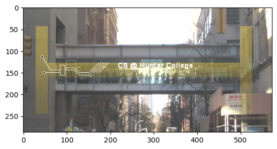
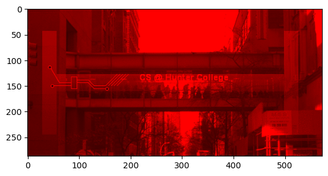
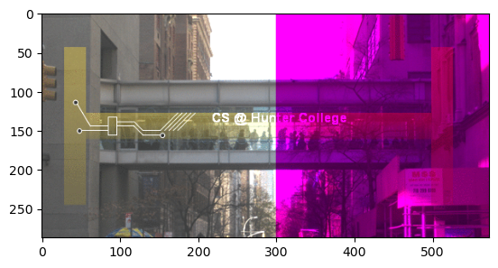
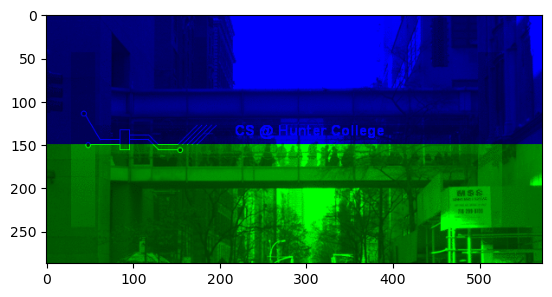

Decisions#
Suppose you want to run one command if a certain condition is true and another command if the condition is false. Python has a built in control block to handle this.
At the end of this notebook, you’ll be able to:#
Take input from the user
Understand the logic used for an if statements (of one statement)
Load data from a txt file
Table of Contents#
Part I. Inputs#
While we have been manually entering in variables to generate our outputs, we can also directly get input from the user.
Since Python doesn’t know what you will be entering (number, words, etc.), it stores everything as a string, and leaves it to the user to convert it to what they want. For example, if we wanted a number, we need to convert the letters the user used into a number. The basic conversion functions are:
int(): converts a string (series of characters) into the corresponding integer (whole number).float(): converts a string (series of characters) into the corresponding floating point number (real number).str(): converts a number into the corresponding sequence of characters.
my_string = '240'
print(my_string, type(my_string))
my_int = int('240')
print(my_int, type(my_int))
my_float = float('240')
print(my_float, type(my_float))
Notice that we cannot mix two different types unless they are numbers.
a = 400 # type int
b = 40.4 # type float
print(a+b)
a = 43 # type int
b = "2" # type string
print(a+b)
However intrestingly:
a = 10 # type int
b = "Hi" # type string
print(a*b)
Python allows users to get input (in the form of a string) by using the input function
# Takes input from the user and stores it in variable my_string
my_string = input("Enter your name: ")
The text that is inside the parenthesis is printed out, then a text prompt is provided where the user can enter in a value.
# Example of a turtle that draws a square of 4 different colors
from jupyturtle import *
make_turtle()
colors = 'red orange green blue purple cyan'.split(' ')
# ['red', 'orange', 'green', 'blue']
for color in colors:
set_color(color)
forward(30)
left(360/len(colors))
But what if we want a color that’s not obvious to the computer (for example lilac), we’ll need a more robust system for representing colors
Task: Write a program to draw a triangle with 3 different colors
Part II. If Statements#
The decimal system is a way of representing numbers that you are familiar with from elementary school. In the decimal system, a number is represented by a list of digits from 0 to 9, where each digit represents the coefficient for a power of 10.
147.3 using the powers of 10
\(147.3 = 1 \cdot 10^2 + 4 \cdot 10^1 + 7 \cdot 10^0 + 3 \cdot 10^{-1}\).
Since each digit is associated with a power of 10, the decimal system is also known as base10 because it is based on 10 digits (0 to 9). However, there is nothing special about base10 numbers except perhaps that you are more accustomed to using them. For example, in base3 we have the digits 0, 1, and 2 and the number \(121(base\ 3) = 1 \cdot 3^2 + 2 \cdot 3^1 + 1 \cdot 3^0 = 9 + 6 + 1 = 16(base\ 10)\)
It is useful to denote which representation a number is in. Therefore in this chapter, every number will be followed by its representation in parentheses (e.g., 11 (base10) means 11 in base10) unless the context is clear.
A very important representation of numbers for computers is base2 or binary numbers. In binary, the only available digits are 0 and 1, and each digit is the coefficient of a power of 2. Digits in a binary number are also known as a bit. Note that binary numbers are still numbers, and so addition and multiplication are defined on them exactly as you learned in grade school.
Example Convert the number 11 (base10) and 37 (base 10) into binary. \(11 (base\ 10) = 8 + 2 + 1 = 1 \cdot 2^3 + 0 \cdot 2^2 +1 \cdot 2^1 +1 \cdot 2^0 = 1011 (base\ 2)\)
\(37\ (base\ 10) = 32 + 4 + 1 = 1 \cdot 2^5 + 0 \cdot 2^4 + 0 \cdot 2^3 + 1 \cdot 2^2 + 0 \cdot 2^1 + 1 \cdot 2^0 = 100101\ (base\ 2)\)
Example Convert the number 24 (base10) and 89 (base 10) into hexadecimal. \(24 (base\ 10) = 16 + 8 = 1 \cdot 16^1 + 8 \cdot 16^0 = 18 (base\ 16)\)
\(89\ (base\ 10) = 80 + 9 = 5 \cdot 16^1 + 9 \cdot 16^0 = 59\ (base\ 16)\)
print(bin(11))
print(bin(37))
0b1011
0b100101
print(hex(24))
print(hex(89))
0x18
0x59
But what happens if we run out of numbers when counting in base 16?

In hexadecimal, once we hit the number 9, we start using letters. So A=10, B=11, C=12, D=13, E=14, F=15.
Binary numbers are useful for computers because arithmetic operations on the digits 0 and 1 can be represented using AND, OR, and NOT, which computers can do extremely fast.
Unlike humans that can abstract numbers to arbitrarily large values, computers have a fixed number of bits that they are capable of storing at one time. For example, a 32-bit computer can represent and process 32-digit binary numbers and no more. If all 32-bits are used to represent positive integer binary numbers, then this means that there are \(\sum_{n=0}^{31} 2^{n} = 4,294,967,296\) numbers the computer can represent. This is not very many numbers at all and would be completely insufficient to do any useful arithmetic on. For example, you could not compute the perfectly reasonable sum \(0.5 + 1.25\) using this representation because all the bits are dedicated to only integers.
Task: Convert the following
12 base 10 to binary
1101 binary to base 10
156 base 10 to hex
FA hex to base 10
Colors follow the format of Red, Green, Blue, or RGB for short. This means the first slot represents the redness of a color, the second slot represents the greenness of a color, and the third slot represents the blueness of a color. Check out some of the common colors found here

Task: Guess the following colors
00FF00
0000FF
FF0000
000000
FFFFFF
And likewise, we can use the following on turtle
# Set the turtle to blue
from jupyturtle import *
make_turtle() # creates the turtle for us
set_color('#0000FF') # sets the color to blue
forward(50) # moves forward by 50
Part III: Loading data#
There are many different formats to store images. Some store the information about the color of every pixel (“picture element” or dot on the screen). Others store end points of lines or boundaries of regions and the colors of each. We focus on the former, and in particular, use the png (portable network graphics) file format, which is popular for storing images captured from cameras and is `lossless’ (every pixel captured is stored, so, can also be quite large).
For the purposes of this section, I’ll be working with the following image:
https://huntercsci127.github.io/images/csBridge.png
{kind=link}
Feel free to pick your own image to use!
Every pixel on your computer contains a red, green and blue component that are in the same spot as each other (well not exactly). This leads to your computer displaying each pixel with 3 different components.

Any point can be accessed via its coordinates (i,j) and the color channel (0 for red, 1 for green, and 2 for blue). In our example above, with the picture stored in the variable, img:
img[r,c,chan]
!pip3 install matplotlib numpy
import matplotlib.pyplot as plt
import numpy as np
img = plt.imread('csBridge.png') #Read in image from csBridge.png
plt.imshow(img) #Load image into pyplot
<matplotlib.image.AxesImage at 0x7cbd2ef50690>

img2 = img.copy() #make a copy of our image
img2[:,:,1] = 0 #Set the green channel to 0
img2[:,:,2] = 0 #Set the blue channel to 0
plt.imshow(img2) #show the new image
<matplotlib.image.AxesImage at 0x750238cf2fd0>

img2 = img.copy() #make a copy of our image
img2[:,300:,1] = 0 #Set the green channel to 0
plt.imshow(img2) #show the new image
Clipping input data to the valid range for imshow with RGB data ([0..1] for floats or [0..255] for integers). Got range [0.0..100.0].
<matplotlib.image.AxesImage at 0x7cbd2ef18550>

When we remove the green and blue components of an image, all we are left with will be the red portion, which is what’s displayed above.
Task: Using your own image:
Make the upper half of the image into the blue component
Make the bottom half of the image into the green component
img2 = img.copy() #make a copy of our image
# upper half
img2[:150,:,0] = 0 # red off
img2[:150,:,1] = 0 # green off
# lower half
img2[150:,:,0] = 0 # red off
img2[150:,:,2] = 0 # blue off
plt.imshow(img2) #show the new image
<matplotlib.image.AxesImage at 0x7cbd2c978690>
